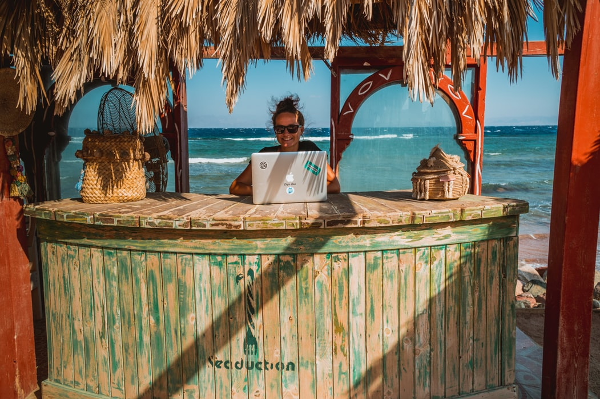

무료로 2주 만에 풀스택 마스터하고 개발자 되기

기간 : 2020.03.10 ~ 2020.03.23
목표 : 풀스택 전과정과 앞으로 필요한 부분을 정확하게 이해하고, 혼자서 결과물(소규모 웹사이트 개발 - 월드물류 웰사이트)을 가져올 수 있는 실력을 갖춤
커리큘럼
Html & Internet
Html
CSS
Javascript
노마드코더의 To do list
node js
express
성공